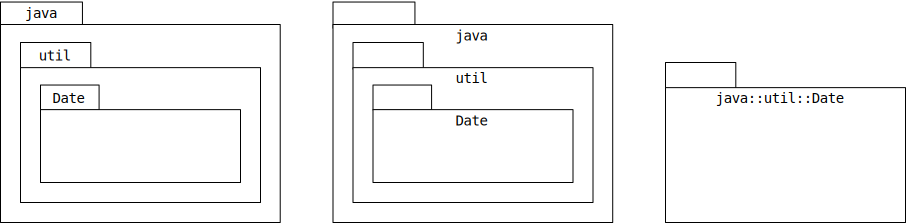
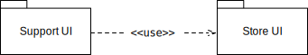
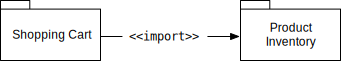
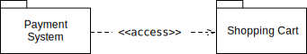
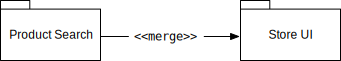
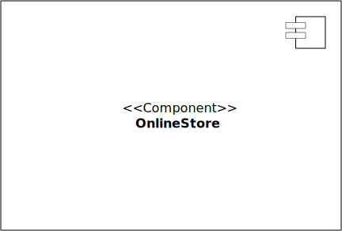
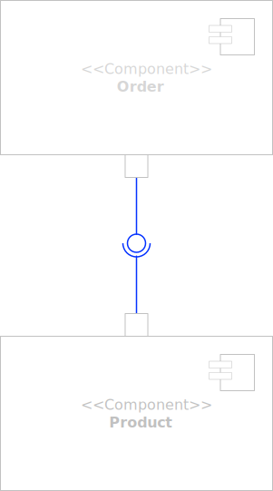
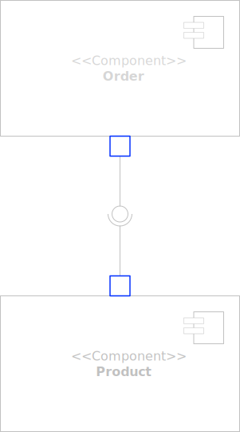
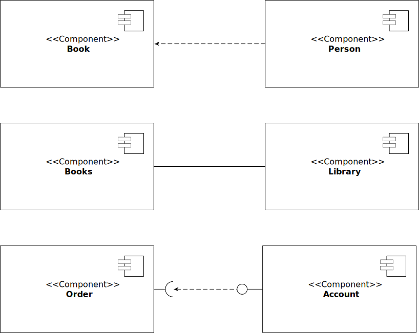
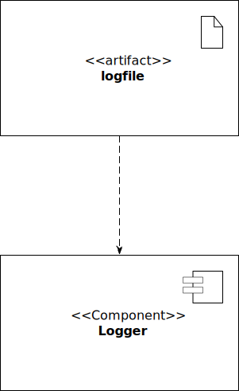

UML structure diagrams represent the static aspects of a system by:
Class diagrams are the foundation of object-oriented modeling, providing:
Class diagrams bridge the gap between conceptual models and actual implementation code.
Tip
Key Uses: System architecture design, code generation, documentation, and database schema mapping
Fade out
Highlight red
hgfdhgfhfg
Object diagrams serve as concrete examples of class structures, offering:
Object diagrams bring abstract class structures to life by showing them populated with actual data.
Tip
Key Uses: Test case modeling, complex relationship explanation, prototype validation, and business scenario illustration
Package diagrams show the dependencies between different packages in a system, providing a high-level organization of system elements. They help maintain clean architecture by organizing elements into manageable groups.
Package diagrams are used to show:
Key Uses
Large system organization, dependency management, and architecture layering
Packages can be represented by the notations as shown here:

Fully qualified name of a package has the following syntax:
Name owing the package::Name of the package
For example:
java::util::Date
Package diagrams illustrate the organization and dependencies among packages in your system. Each dependency between packages is represented by a dashed line with an arrow pointing from the dependent package to the package being depended upon, often annotated with a stereotype (<<stereotype>>) that specifies the type of dependency.
Use (<<use>>): One package depends on another package’s functionality to work properly. It’s a general form of dependency.

Import (<<import>>): One package directly includes public parts of another package, treating them as its own elements.

Access (<<access>>): One package can see and use the public parts of another package without directly importing them.

Merge (<<merge>>): One package combines completely with another package, merging their contents into one.

UML Component Diagrams are used to model the high-level software components and subsystems in service-oriented architectures and component-based development projects, and more importantly, define the interfaces between those components.
The are essential for modular system design, showing:
Key Uses
System decomposition, third-party integration planning, reusable module identification, and architecture verification
Components are the fundamental building blocks representing modular parts of a system with well-defined interfaces.
«Component» stereotype.

Iterfaces define a contract or set of operations that a component promises to provide or requires from other components.

Ports are the defined interaction points on the boundary of a component where access to interfaces is provided or required.
Tip
Ports are more common on subsystems as they help manage and organize the potentially numerous interfaces that a subsystem might expose.

Relationships depict the connections and dependencies between components and interfaces.

Artifacts represent physical files or data, such as executable files, libraries, or documentation, that are deployed on nodes.
<<artifact>> stereotype.

Composite structure diagrams provide insight into the internal composition of elements, illustrating:
Composite structure diagrams reveal how components work together to implement the behavior of the containing classifier.
Key Uses
Design pattern implementation, complex class structure visualization, runtime architecture modeling, and collaboration specification
Deployment diagrams illustrate the physical arrangement of hardware and software components in a system. They show clearly how software artifacts (executables, libraries, data files) are distributed across hardware nodes (servers, devices).
Specifically, they illustrate:
Key Uses
Infrastructure planning, hardware capacity estimation, deployment strategy development, performance optimization, and clear documentation of physical system architectures.
Profile diagrams provide extensions to the UML language itself, offering:
Profile diagrams customize UML for specialized domains while preserving its fundamental structure and notation.
Tip
Key Uses: Industry-specific modeling standards, platform-specific modeling, consistency enforcement, tooling support enhancement, and modeling practice standardization